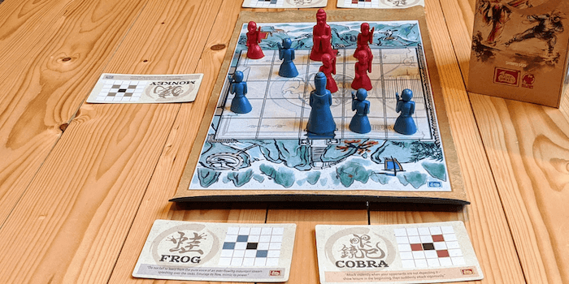
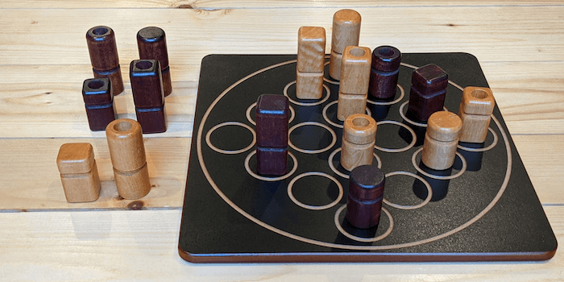
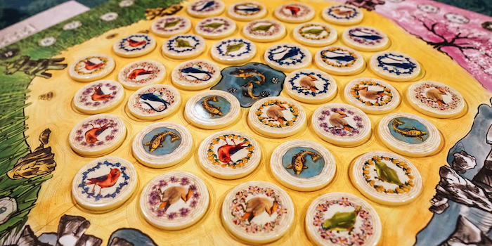

3 Strategy Board Games like Chess


Chess is an incredible game that has held up for almost 1500 years. The mechanics that Chess introduced are simple, yet players have come up with many unique and interesting strategies to win.
If you are looking for a new competitive game that revolves around planning ahead and abstract strategy, you should check out these 3 games like Chess. All of these games are also beautiful in both artwork and design, which is a huge plus!
Onitama


Onitama is an ingenious 1v1 game played on a square grid. Similar to Chess, players move their pieces to control the board and capture their opponent's pieces. However, each piece does not move in a unique way like they do in Chess. In Onitama, 5 randomly drawn cards show movement patterns that you can use for any of your pieces!
Each player starts with 4 pawns, 1 emperor, and 2 movement cards. On your turn, you select one of your cards and move one piece according to the pattern shown. This card is then placed to the left of the board, and they take the card to the right. Players continue taking turns in this manner - using one card and rotating it out for another.
There are also 2 ways to win in Onitama. A player wins if they capture their opponent's emperor OR if they move their emperor onto their opponent's shrine - the space where the emperor starts. This second win condition really turns Onitama into a mind game, as you must constantly be aware of both possibilities.
Onitama is a great competitive game that is simple yet challenging, just like Chess. If you are looking for another deep strategy game that is quick to learn and different every time, look no further than Onitama.
Buy Onitama on Amazon
Quarto
Quarto is a beautifully designed 2-player game of patterns and deductive reasoning. The big twist in this game is that you choose the pieces your opponent will place!
Each piece in Quarto is unique and varies in 4 features: light or dark, tall or short, circle or square, and solid or hollow. On your turn, you choose one of the available pieces and hand it to your opponent. They place it on an empty space and then choose a piece for you to place. The object of the game is to place 4 pieces in a row that all share at least 1 matching feature.
A game of Quarto starts off easy, but more thought is required when selecting pieces as the match progresses. As the board fills and more patterns appear, it becomes difficult to identify which pieces are "safe" to give your opponent. However, if you plan ahead and choose wisely, you can corner your opponent and force them to hand you a satisfying win!
This game feels like a combination of Chess and Connect 4, and the rule that you choose your opponent's pieces is truly unique. If you want a strategy game that is faster to play than Chess and exercises a different part of your brain, give Quarto a try.
Buy Quarto on Amazon
Seikatsu
Seikatsu is an elegant tile placement game, played best with 3 people. Players take turns laying tiles showing colored birds and flowers on a Japanese garden-themed board. Each tile scores points twice - once when it is placed, and once at the end of the game. You must think both short-term and long-term in Seikatsu, just like in Chess.
Points are first awarded based on how many birds of the same color are adjacent to your placed tile. At the end of the game, you also score points for how many flowers of the same type are in each of your rows. The board is shaped as a hexagonal grid, and each player is in charge of their own "perspective" - a set of 7 rows.
When you place a tile, you are placing a flower in your opponents' rows as well. You must try to place tiles in a way that is both beneficial to you and bad for your opponents, and this is no easy task.
Seikatsu is for you if you love unique mechanics, beautifully themed games, or simply want an awesome 3-player experience. Seikatsu is easy to learn and set up, but you will need to play many times before you can call yourself an expert!
Buy Seikatsu on Amazon
Want more recommendations or have feedback for us? Send an email to support@spiralburst.com and we'll get back to you!